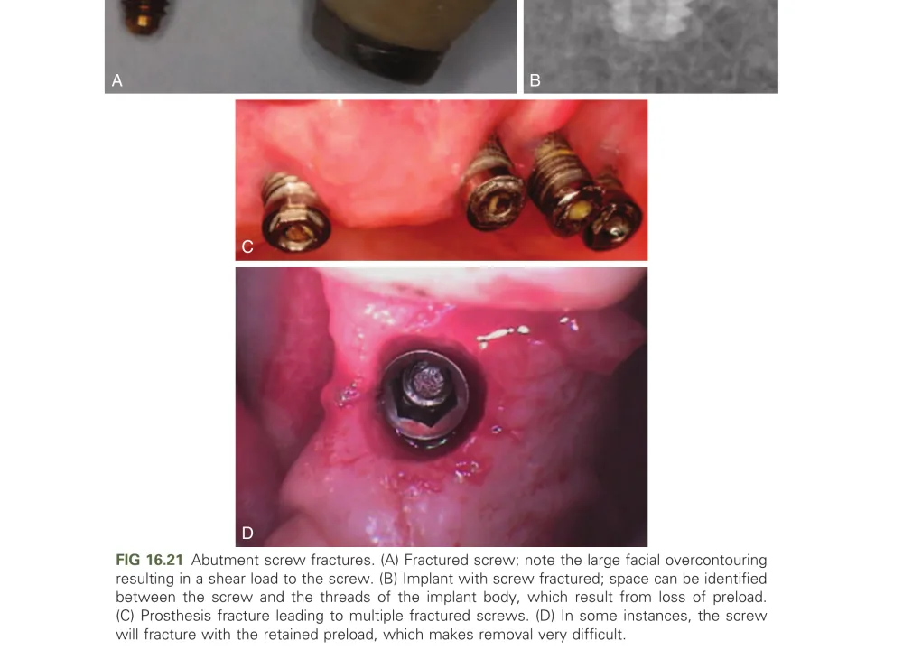
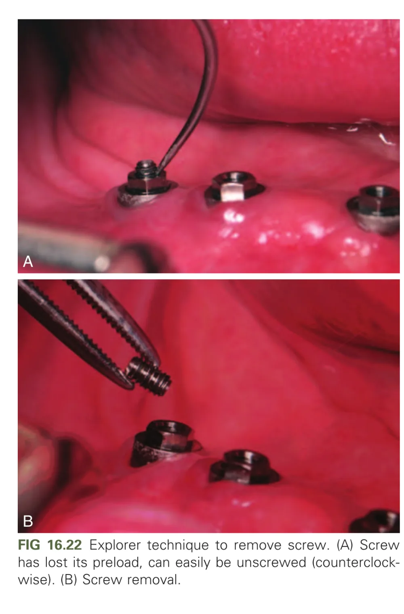

نسخه استخراجشده؛ ترجمه یا تأیید علمی انجام نشده است. وضعیت: captured
یونیت پیش با شل شدن پیچ تمام شد. این یونیت از همانجا آغاز میشود — از مرحلهی بعدی همان عارضه.
و اتیولوژی در یک جمله: «عامل اتیولوژیکی که به احتمال زیاد شکست پیچ را ایجاد میکند، تنش بیومکانیکی بر سیستم ایمپلنت است.» و مسیرش: تنش بیومکانیکی به ترمیمهایی که گیرشان تا حدی از دست رفته، یا به خستگی میانجامد، که مستقیماً به مقدار افزایشیافتهی نیرو مربوط است.
و یک جملهی کوتاه که کار را ساده میکند: «اتیولوژی شکست پیچ اباتمنت همان اتیولوژی شل شدن پیچ است.» — یعنی همهی چهارده عاملی که در یونیت پیش خواندی، اینجا هم برقرارند.
و اعداد شیوع، که یک الگوی مهم دارند:
و رابطهای که مستقیماً به انتخاب سیستم مربوط است: «شکست پیچ اباتمنت مستقیماً به قطر پیچ مربوط است، و پیچهای با قطر بزرگتر کمتر میشکنند.» — همان الگویی که در یونیت پیش برای قطر پلتفرم دیدی، اینجا برای خودِ پیچ تکرار میشود.
و به دامنههای بسیار پهن دقت کن: ۰ تا ۱۹ درصد و ۰٫۲ تا ۸ درصد. این پهنا خودش یک پیام دارد: شکست پیچ بهشدت به شرایط هر مورد، بهویژه عوامل نیرو، بستگی دارد — برای پیچ پروتز از صفر تا نزدیک یک از پنج.
و اکنون مهمترین گام پیشگیری، که یک تصمیم زمانبندی است:
«درمان فوری پیچ شل.» «اگر مشخص شود یک پیچ اباتمنت متحرک است، درمان فوری توصیه میشود. هرچه بازهی زمانی که نیرو بر یک پروتز متحرک اعمال میشود طولانیتر باشد، احتمال بیشتری هست که پیچ اباتمنت تغییر شکل دهد و احتمالاً بشکند.»
و چرا؟ چون «پیچ شل از یک منحنی خستگی پیروی میکند که به شمار چرخهها و شدت نیروهای مکرر مربوط است.» — همان منحنی خستگی درس اول یونیت پیش، این بار روی یک پیچی که دیگر پیشبار ندارد. یعنی از لحظهای که پیچ شل میشود، ساعت شکست شروع به کار میکند.
و شکل ۱۶٫۲۱ چهار وضعیت واقعی را نشان میدهد که ارزش دیدن دارند: پیچ شکسته با اُورکانتور فاسیال بزرگ که بار برشی بر پیچ میگذارد، ایمپلنتی که در آن فضای میان پیچ و رزوههای بدنه از دست رفتن پیشبار را نشان میدهد، شکست پروتز که به چند پیچ شکسته انجامیده، و حالتی که پیچ با پیشبار حفظشده میشکند، که خارج کردنش را بسیار دشوار میکند.
به مورد آخر خوب دقت کن، چون درس بعدی روی همان بنا میشود: یک پیچ که شل شده و بعد شکسته، پیشبار ندارد و آزادانه میچرخد. اما پیچی که زیر پیشبار شکسته، هنوز تحت فشار است — و خارج کردنش بسیار دشوار است؛ روشهای ساده اغلب روی آن کار نمیکنند.

روشهای خارج کردن پیچ شکسته را به ترتیب افزایش تهاجم ببین. این ترتیب خودش یک قاعدهی بالینی است: از کمخطرترین شروع کن.
روش یکم — سوند (Explorer). «آسانترین روش برای خارج کردن یک پیچ، چرخاندن آن در خلاف عقربههای ساعت با نوک یک سوند تیز است.»
و منطق فیزیکیاش: «چون یک پیچ شل هیچ پیشباری ندارد، جزء شکسته در بدنهی ایمپلنت پسیو باقی میماند.» — یعنی هیچ نیرویی آن را نگه نداشته و تنها اصطکاک سطحی مانع است.
و کِی کار نمیکند: «اگر پیچ تغییر شکل داده باشد، یا دبری میان پیچ و بدنهی ایمپلنت وارد شده باشد، این تکنیک ممکن است موفق نباشد.»
روش دوم — دستگاه اولتراسونیک یا کاویترون. «اگر دبری میان رزوهها حاضر باشد، میتوان از یک دستگاه اولتراسونیک یا کاویترون استفاده کرد. ارتعاش (حدود ۲۰٬۰۰۰ تا ۳۰٬۰۰۰ دور در دقیقه) معمولاً دبری را جابهجا میکند، و سپس پیچ را میتوان با روش سوند خارج کرد.»
به منطق این توالی دقت کن: روش دوم جایگزین روش اول نیست — مانعِ روش اول را برمیدارد و بعد به آن برمیگردی. این یک الگوی درمانی است نه یک فهرست گزینه.
روش سوم — فرز گرد بسیار کوچک یا 205LN. «میتوان از یک فرز گرد بسیار کوچک یا 205LN در یک هندپیس کندسرعت یا اسکرودرایور AS123 استفاده کرد.»
و ترفند مکانیکیاش زیباست: «نوک فرز روی درز میان پیچ شکسته و اباتمنت (ایمپلنت) گذاشته میشود. همانطور که فرز در جهت عقربههای ساعت میچرخد، اصطکاک واردشده بر پیچ باعث میشود پیچ در خلاف جهت عقربههای ساعت بچرخد و رزوه باز شود.» — یعنی چرخش رو به جلوی ابزار، به چرخش رو به عقبِ پیچ ترجمه میشود.
روش چهارم — فرز مخروطی معکوس (حدود فرز ۳۳½). «با یک فرز مخروطی معکوس در هندپیس تندسرعت (در حالت ایدهآل هندپیس الکتریکی در حالت معکوس)، بهآرامی بالای پیچ را لمس کن.»
و هشدار حیاتی این روش: پیچ شکسته «بهآرامی در مرکز پیچ ضربه زده میشود؛ باید دقت شود که دیوارهها و رزوههای داخلی ایمپلنت لمس نشوند.» — از اینجا به بعد، هر لغزش ابزار میتواند رزوهی داخلی ایمپلنت را نابود کند.
روش پنجم — شیار زدن روی سر پیچ. «یک شیار به عمق ۱ میلیمتر از مرکز پیچ با هندپیس تندسرعت و یک فرز فیشور باریک ساخته میشود. سپس از یک پیچگوشتی برای باز کردن رزوه استفاده میشود.»
و اینجا هشداری هست که باید به بیمار منتقل شود: فرز ممکن است ناخواسته دیوارهی بدنهی ایمپلنت را سوراخ کند و برای ترمیم آن روش قابلپیشبینیای وجود ندارد؛ پس بیمار باید آگاه شود که در نتیجهی این تکنیک ممکن است شکست ایمپلنت رخ دهد. — یعنی از یک جایی به بعد، نجات پیچ به قیمت ریسک کردن ایمپلنت تمام میشود، و این تصمیمی است که بیمار باید در آن شریک باشد.
و راه ششم، که تخصصی است: «کیتهای بازیابی ساخت کارخانه — چند کیت بازیابی در بازار هست که برای خارج کردن پیچهای شکسته به کار میروند. اینها معمولاً مخصوص نوع بدنهی ایمپلنت هستند (داخلی، خارجی، تریلوب و غیره).»
و پروتکل نمونه (کیت Salvin) که نشان میدهد این کار چقدر دقیق است:
به تفاوت سرعتها دقت کن: ۱۰۰۰ تا ۱۲۵۰ دور برای ساختن فرورفتگی، ولی ۷۰ تا ۸۰ دور برای خارج کردن. هر دو مرحله در حالت معکوس و با تورک ۵۰ تا ۷۰ نیوتنسانتیمتر انجام میشوند.
و یک نکتهی جانبی که وقت زیادی نجات میدهد: «اگر اباتمنت به پروتز چسبیده باقی بماند، میتوان پروتز را با گرم کردن ملایم با چراغ بونزن بهراحتی جدا کرد.»
و اگر پیچ شل یا شکسته زیر یک تاج سمانی باشد؟ بریدن تاج روش نامطلوبی است، چون در بیشتر موارد محل سمان معلوم نیست و برش عمیق ممکن است به اباتمنت، پیچ اباتمنت یا بدنهی ایمپلنت آسیب بزند.
روش ایمنتر، دسترسی از سطح اکلوزال است: با فرز الماسی گرد (حدود شمارهی ۸) از فوسای مرکزی در دندانهای خلفی و سطح لینگوال در دندانهای قدامی به پیچ برس، آن را با درایور مناسب در جهت معکوس باز کن، پیچ قدیمی را دور بینداز و پیچ نو بگذار، طبق دستور سازنده تورک کن و سوراخ را با فیلر PTFE و کامپوزیت اوپک ببند. اگر دسترسی ناچار از سطح فاسیال باشد، تاج باید از نو ساخته شود.
